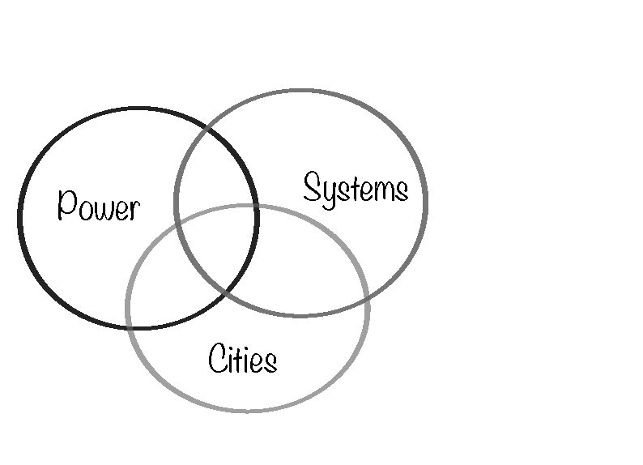
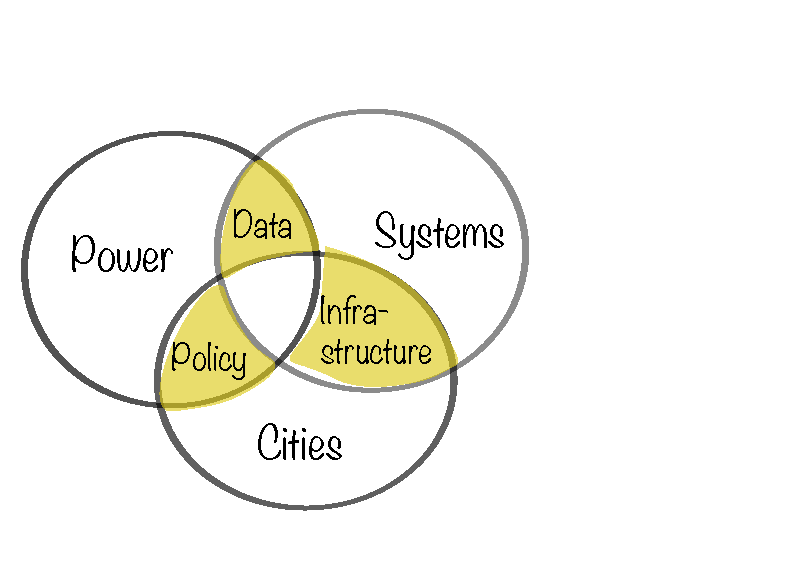
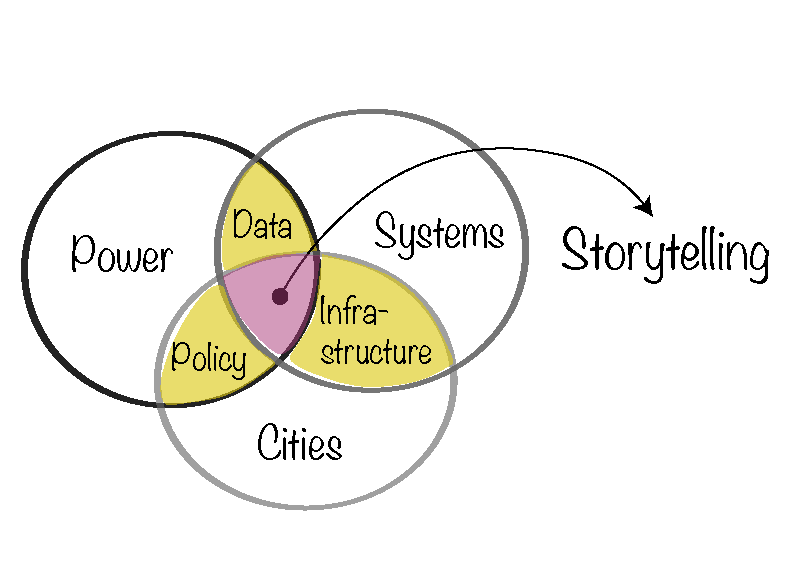
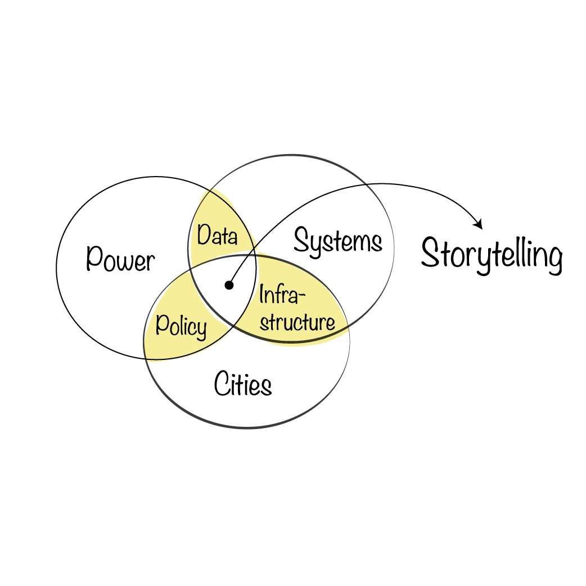

Hello. I'm Khushali, a researcher, multimedia journalist and filmmaker, interested in how people experience systems, cities, and power, and how storytelling can bring data and policy to life.



